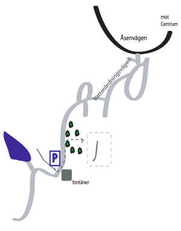

Lat: 57.767239 Long: 14.136014
Liten klippa med bra topprepsankare. Ostvänd och har sol på förmiddagen, torkar ganska snabbt. Klättring i graderna runt 5-6 runt 8m hög. På sina ställen mossigt så ta med en borste.
<googlemap version="0.9" lat="57.768819" lon="14.13168" zoom="15"> 57.767056, 14.131594, Vattenledningsparken </googlemap>
Vattenledningsparken finns det gamla Åsenverket, dvs Åsendammen med sina tre infiltrationsdammar. Från 1860-talet fram till 1958 var Åsenverket den vattenreservoar som försåg Jönköpings gamla stad med vatten. De gamla fontänerna i infiltrationsdammarna är åter i bruk och tack vare självtryck sprutar de vatten året om. Härigenom bildas under extremt kalla vinterperioder isskulpturer.
Parkering mitt emot "fontänerna".Från parkeringen, vandra tillbaka efter vägen. Följ stigen till höger ner bland träden.
Runt dammarna finns det grillplatser, bord & bänkar. Kan vara vara väldigt mycket myror vid väggen.
Kan vara svårt att nå vissa toppankare uppifrån, om man vill toppa sätta upp topprep, ta det försiktigt.
Tog mig friheten att döpa om lederna då ingen info om första bestigaren gick att hitta. |}
Kategori:sport
Kategori:sva
Kategori:vertikalt
kategori:Saknar skrivarformatering
Category:Småland
Copyright (C) Permission is granted to copy, distribute and/or modify this document under the terms of the GNU Free Documentation License, Version 1.3